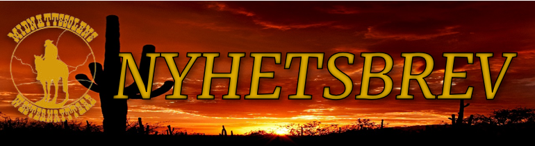
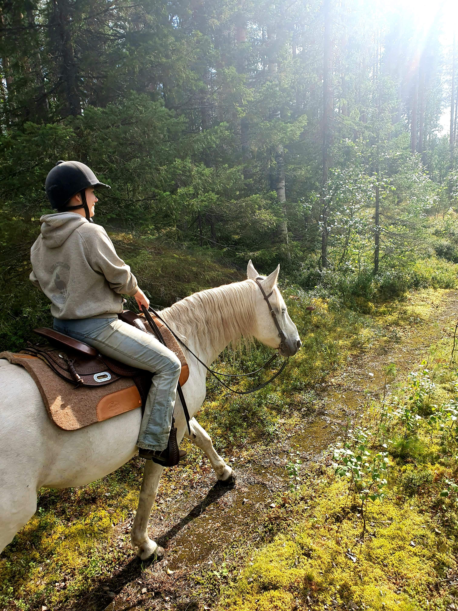
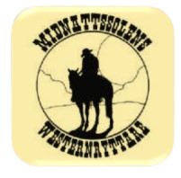
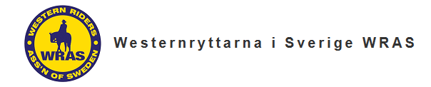
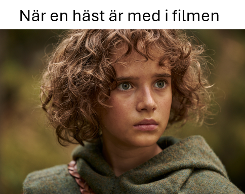

|
Nyheter från Midnattssolens Westernryttare. Ser brevet konstigt ut? View this email in your browser
|
|

|
Howdy alla westernryttare!
|
Kalender
|
|
Har ni tänkt på hur många insekter det finns? Så små men så viktiga. Därför har jag tänkt ägna det här nyhetsbrevet åt en insekt vi alla mött. Myggan.
En myggas dag
Jag flyger omkring. Jag flyger omkring. En blomma. Låt mig äta. Jag flyger omkring. En häst. Får jag sticka dig? Oj oj. Du behöver inte bli arg. Jag flyger omkring. Jag flyger lite högre. En skugga på marken. Är den min? Jag är inte så där stor.
Slut
PS. Har ni sett den nya serien om Ronja rövardotter? Jag såg nämligen att hästarna i den var westerntränade! Häftigt va?
PPS. Bara en påminnelse om att registrera er i det nya tävlingssystemet, mer info finns längre ner i nyhetsbrevet.
Ha det gott!
Text: Matilda Jägare Lindvall

Matilda Jägare Lindvall
Kassör
Midnattssolens Westernryttare
styrelsen@mswr.nu
|
- 23/6 Midsommartävling
- V.27 (eller 28) Clinic Anna Lejvell
- V.29 Ungdomsdag och medlemsträff
Följ oss på



|
|
Styrelsen informerar
Nu börjar det närma sig sommaren! Söndagsträningarna på KRF kommer ta ett uppehåll fram till hösten men sörj icke.
För nu har det blivit dags att visa vad man tränat på! Som vanligt drar vi igång med en midsommartävling den 23 juni.
Kände man att man fortfarande behöver finslipa några detaljer kan man delta på Anna Lejvells clinic i juli. Sedan kan man tävla igen
(ryktas nämligen om ytterligare en tävling!). Mitt i det här känner man säkert att man behöver pusta ut lite! Det känner vi också och
bjuder därför in till en medlemsdag i juli. Förra året var oerhört trevligt och vi ser fram emot att träffas igen!
PS. Vill du anordna en aktivitet eller har en idé, höra av dig till styrelsen så hjälper vi dig att genomföra den
|

Nyheter från WRAS
WRAS (Western Riders Association of Sweden) är MSWR:s förbund och samlar alla westernföreningar i Sverige. På WRAS hemsida kan man läsa mer om organisationen och nyheter för Western Sverige.
Nu händer det spännande saker i WRAS. Vi har en verksamhetsplan för 2024 som innehåller många saker, bland annat en internationell stortävling på Runsten Equestrian i Stockholm år 2025, ett nytt tävlingssystem och planer på att göra
en ny och fräsch regelbok. Vi kommer också gå igenom och komma med ett övergripande förslag till att modernisera och förändra WRAS stadgar, fortsätta planera för en cup mellan klubbarna som kommer gynna medlemsantal och öka intresset
för att tävla, i den tävlingsorganisation vi är. Vi har också på årsmötet beslutat att återinföra endagslicenserna, som kommer att kosta 150 kr för hela ekipaget per tävling. Hälften av inkomsten för detta kommer att tillfalla klubben
och hälften tillfaller förbundet och utgör omkostnaden för starterna då WRAS betalar per start i det nya tävlingssystemet och inte som tidigare med en fast avgift, vilket vi tror kommer att bli billigare i längden. Utöver detta har vi
också påbörjat att modernisera vår gamla hemsida 'wras.se' och göra om den från grunden, för att så småningom kunna återgå till den webbadressen. Ja, det är som ni ser verkligen många bollar i luften just nu.
Vårt nya tävlingssystem finns på wshow.se och fungerar redan nu. Alla tävlingar efter 25/5 2024 ska läggas in i nya systemet men man kan även flytta över befintliga tävlingar före
detta datum om man vill. Vi finns tillgängliga på ta@wras.se för att hjälpa er i alla delar av att prova och använda vårt nya system. Det finns
också instruktionsfilmer för hur man lägger in sig som ryttare, hur man lägger in tävling som arrangör och mycket mer på wshow.se. Ni kan alltså använda vårt gamla system ett tag till medan ni lär
känna vårt nya system. Viktigt att man som ryttare går in och registrerar sig och sin häst så att ni finns med i systemet framöver. Alla tävlingar för 2024 kommer att flyttas över till det nya systemet så att vi inte tappar några resultat eller dylikt.
Vår hemsida på wras.se har hängt med länge och nu är det dags att fräscha upp vårt ansikte utåt. Här skulle vi behöva hjälp. Känner du/ ni någon som kan mycket om hur man bygger en hemsida eller är intresserad av den här typen av arbete.
Hör av er! Vi behöver just er hjälp för att förstärka upp gruppen som arbetar med detta. Här finns det möjligheter att anmäla sig för att hjälpa till om man är duktig och intresserad av att bygga WRAS ansikte utåt. Maila i så fall
styrelse@wras.se för att anmäla ditt intresse. Fram till att den nya hemsidan sjösätts så kommer vi att lägga ut vår information på wras.horse som tidigare.
Nu när det börjar bli varmare vill vi även meddela om att det kommer hållas två ungdomsläger i sommar! Om du är intresserad kan du läsa mer här ungdomsläger.
Nyhetsbrevets meme

|